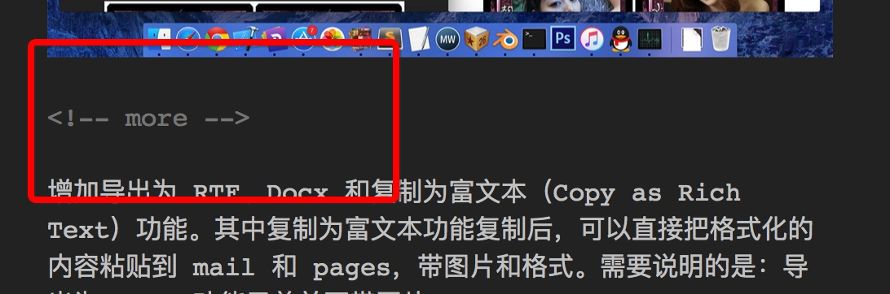

MWeb 的定位
正如名字：【MWeb - 专业的Markdown写作、记笔记、静态博客生成软件】 所说，MWeb 未来会在这三方面不断优化。
MWeb Lite 数据转移
把 MWeb Lite 的文档库文档和数据搬到 MWeb 正式版中
Markdown 语法和 MWeb 写作使用说明
如果您不知道 Markdown，请先阅读 Markdown 語法官方說明繁體中文版 这篇文章。
如果您已经知道 Markdown，请直接阅读 Markdown 语法和 MWeb 写作使用说明
MWeb 的发布/更新到 Wordpress、Evernote、Blogger 等服务
使用 MWeb 可以把写好的文章发布/更新到 Wordpress、Evernote、Blogger 等多个服务，特别说明的是：拖拽进来的图片都会一并发布的，请阅读：
- MWeb 1.3.7 发布！增加发布到 Wordpress 等支持 Metaweblog API 的服务，如：Wordpress 博客、新浪博客、cnblogs、oschina。
- MWeb 1.5 发布！增加打字机滚动模式、发布到 Evernote、印象笔记、Wordpress.com、Blogger、编辑器内代码块语法高亮
- MWeb 1.6 发布！Dark Mode、全文搜寻、发布到Wordpress、Evernote 等支持更新、编辑/预览视图模式等
小技巧：发布到 Wordpress、Blogger 等支持增加 阅读更多，菜单：Actions - Insert Read More Comment 即可插入，如下图，注意前后要空两行，因为这是一个 HTML 标记。

MWeb 外部文档模式（CMD + E）
外部文档模式是基于文件的管理方式，非常利于同步和协作，另外 MWeb 的外部文档模式还为 Otcpress、JekyII 等静态博客增加拖拽和粘贴插入图片、实时预览功能，请阅读：
MWeb 1.4 新功能介绍一：引入文件夹到 MWeb 中管理，支持 Octpress、Jekyll 等静态博客拖拽插入图片和实时预览
MWeb 图床功能
请阅读：MWeb 1.9 发布！新图标、编辑器大改进、导出 PDF 改进、增加图床功能、中文版等！
MWeb 文档库模式（CMD + L）
文档库用于记笔记和静态网站、博客生成，请阅读：MWeb 文档库模式详细说明 这篇文章。
另外有用的文章：
用 wkhtmltopdf 生成带目录的 PDF 和自定预览 CSS
如何用 MWeb 发布到 Wordpress 等支持 Metaweblog API 的服务，如：Wordpress 博客、新浪博客、cnblogs、oschina
MWeb 生成静态网站、博客
请阅读：MWeb 生成静态博客详细说明
如果您想增加分享和评论，请阅读：给MWeb生成的静态博客增加分享和评论
MWeb 自带的网站主题肯定不能满足所有人的需求，如果您要制作自己的主题，请阅读：自定网站或博客主题简单说明
MWeb 所有的主题都放到 github 上了：https://github.com/oulvhai/MWeb-Themes，这其中：
- mweb-Bootstrap-blog-EN 这个主题是 MWeb 英文官网 http://www.mweb.im/ 在用，也是放在github pages上。
- mweb-Bootstrap-blog 主题是 MWeb 中文官网 http://zh.mweb.im/ 在用，目前放在 gitcafe pages 上。
- 新增： mweb-medium-like 主题，放在 https://github.com/oulvhai/mweb-medium-like 这个位置，目前我的博客在用：http://coderforart.com
- 新增：mweb-foundation-book 主题，放在 https://github.com/oulvhai/mweb-foundation-book 这个位置，Demo 网址：http://coderforart.com/objccndemo/
网站、博客生成后，要发布和更新到网站服务器，请阅读以下两篇文章：
个人体验：使用 GoodSync 同步是最简单方便的，然后是使用 git 发布到 github、gitcafe 这类免费的博客服务提供商。而使用一般的 FTP 工具则比较麻烦，适用于更新比较少的情况。
文档库备份
MWeb 1.7 版开始支持备份（MWeb - Preferences - Backup），按狡兔三窟的原理，可以把文档库备份到三处！这样的话，估计能保证文档库安全了！
要恢复备份，只要用之前备份的文件夹下的 LocalData 文件夹换到
~/Library/Containers/com.coderforart.MWeb/Data/Documents/MWeb/LocalData
即可。方法：右键文档库标题可以快速转到这个位置，然后 CMD + Q 退出 MWeb，把备份的文件夹换上，再启动 MWeb 即可。
问题和建议
- 可以查看 MWeb 所有问题和回答收集 这篇文章。
- 如果还有任何问题或建议，可以用以下任何一种方法联系我：
- 在 MWeb 中点：Help --> Send Feedback 写信给我
- 发邮件给我：coderforart+233@gmail.com
- 在微博上私信我：@oulvhai
- Twitter：@oulvhai